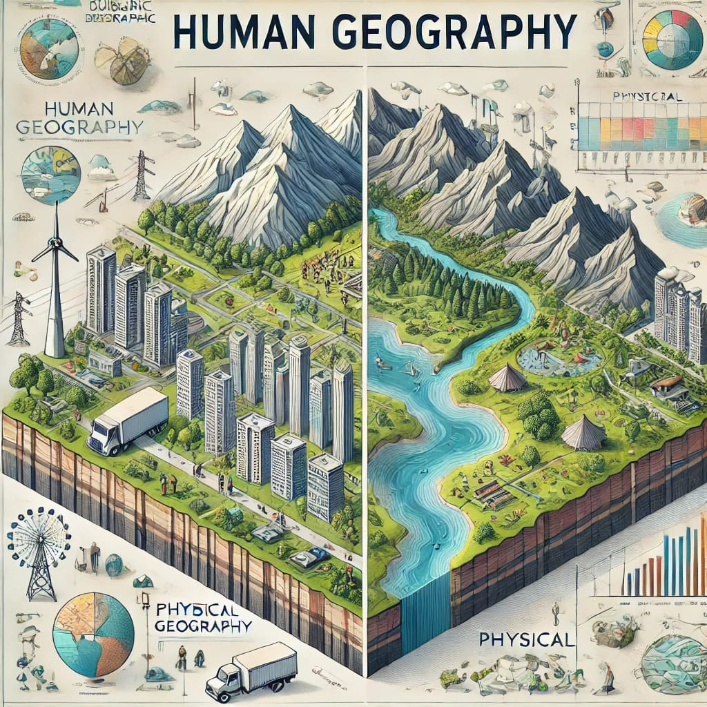
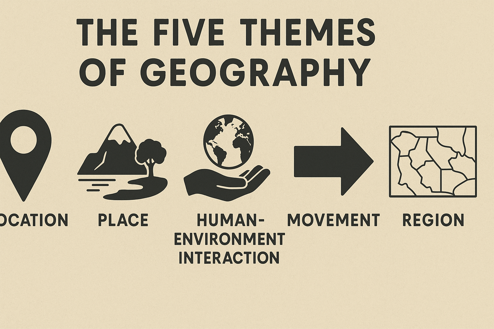

استكشاف الأرض والإنسان والطبيعة
تُعد الجغرافيا من العلوم الأساسية التي تُعنى بفهم الأرض بكل مظاهرها، سواء كانت طبيعية كالجبال والأنهار، أو بشرية كالسكان والمدن. إن فهمنا للعالم من حولنا يبدأ من إدراك كيف تؤثر البيئة على الإنسان، وكيف يُسهم الإنسان بدوره في تشكيل المكان من حوله.
تنقسم الجغرافيا إلى فرعين رئيسيين: الجغرافيا الطبيعية التي تهتم بدراسة الظواهر البيئية كالجبال، المناخ، والمسطحات المائية، و الجغرافيا البشرية التي تُركّز على الأنشطة الإنسانية كالنمو السكاني، الزراعة، والتخطيط الحضري. ومن خلال الربط بين هذين الفرعين، نتمكن من فهم أعمق للعلاقة بين الإنسان والبيئة.
يلعب هذا العلم دورًا حيويًا في مواجهة تحديات العصر مثل التغير المناخي، وإدارة الموارد الطبيعية، والتنمية المستدامة. كما يُستخدم في مجالات التخطيط العمراني، الخرائط، السياحة، وحتى في الأمن الجغرافي والسياسي.
كلمة "جغرافيا" مشتقة من اللغة اليونانية القديمة، وتتكون من مقطعين: "جيو" وتعني الأرض، و"غرافيا" وتعني الكتابة أو الوصف. أي أن الجغرافيا هي "وصف الأرض"، وهذا يشمل دراسة كل ما يتعلق بموقع الأرض، مكوناتها، وتأثير الإنسان فيها.

تُعد هذه الصورة من الوسائل التعليمية البصرية التي تسهم في تعزيز فهم الطلاب لمفاهيم الجغرافيا من خلال المقارنة المباشرة بين العالم الطبيعي والبيئة البشرية. فهي تجسد العلاقة بين الإنسان والطبيعة بشكل فني وتفاعلي، مما يجعلها أداة فعالة في التعليم داخل الصف أو في الموارد الرقمية. تمنح هذه الصورة المتعلم فرصة لفهم النظريات الجغرافية عبر التمثيل الواقعي، وتحفّز على التفكير النقدي والاستنتاج.

| مجالات الجغرافيا | خطوات الدراسة |
|---|---|
| الجغرافيا الطبيعية | ملاحظة الظواهر الطبيعية |
| الجغرافيا البشرية | تحليل البيانات |
| الجغرافيا الاقتصادية | رسم الخرائط |